Chair Peak North Face
Dan and I were going to do something this weekend. My time got shortened to one day due to long-overdue house chores and some relatives visiting on Sunday. He had climbed Chair Peak before but generously agreed to climb it with me. This route has been kind of a milestone in my mind, and I tried rather crabbily to get some sleep Friday night. “Kris, can you tell the cat to quit breathing so loud?” Finally I slept and fuzzily prepared when the alarm when off 35 seconds later. We took Dan’s truck, and Dan had brought Aidan H. along. I’d met Aidan once before and exchanged emails. It was great to finally climb with him. I could try to drill into him how lucky he is to be doing this at age 15!
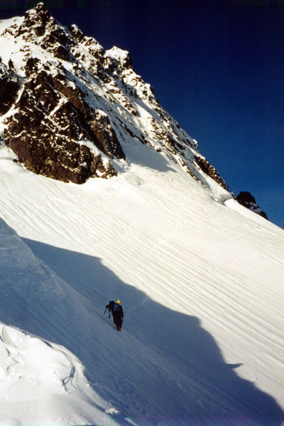
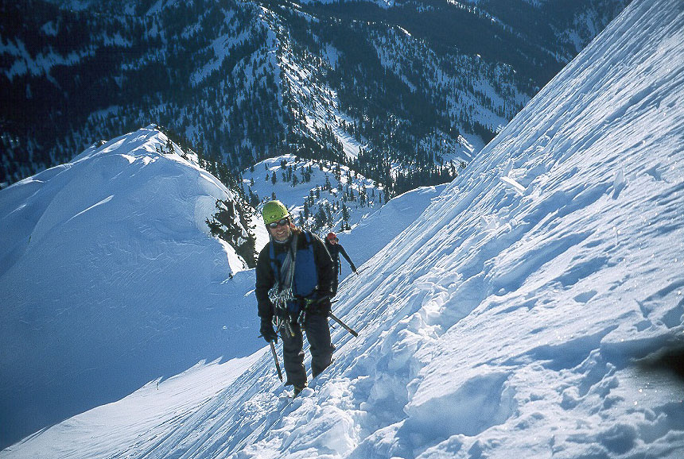
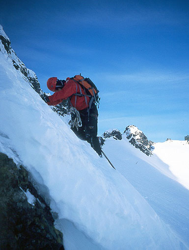
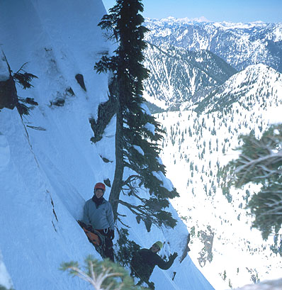
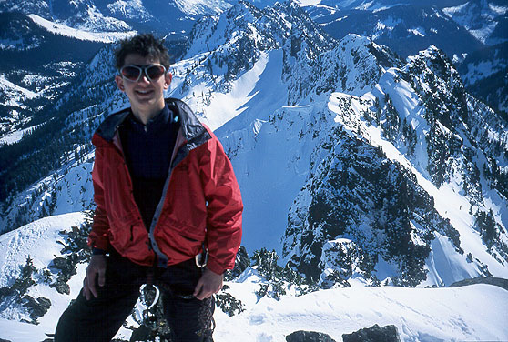
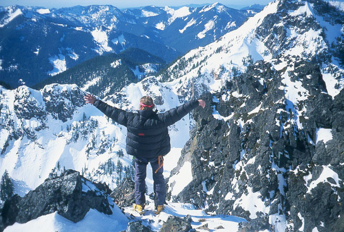
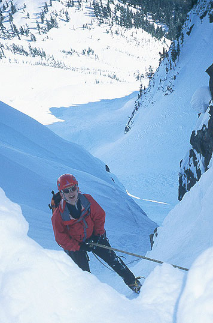
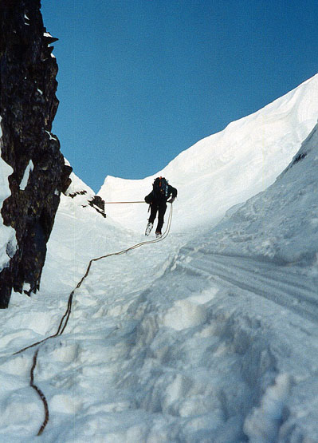
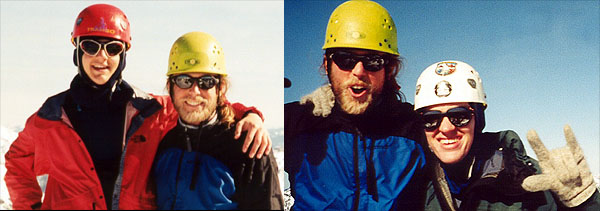
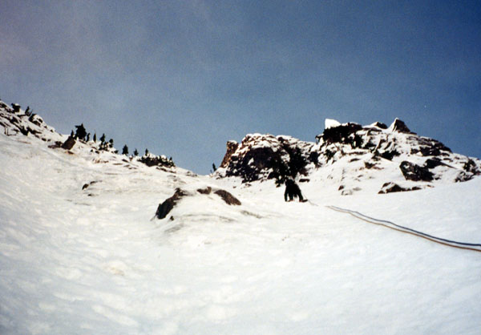
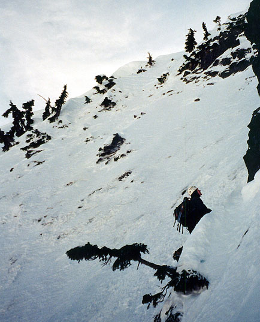
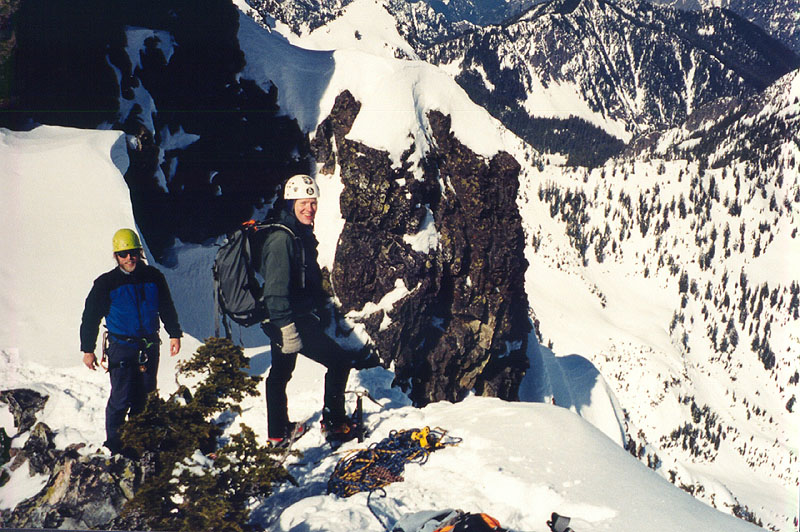
We geared up and took off. Dan was on skis, Aidan brought skis but left them, and I brought snowshoes and left them. We hiked up the valley and Dan skinned up beside us, talking about previous climbs of Chair. This would be his sixth time on top, so he had all kinds of stories. Good conditions, bad conditions, witnessing a fall. We passed the now-anemic Kiddie Cliff ice flow and soon crunched up pre-made steps above Source Lake. We’d met Alex and Summer in the parking lot, one of those happy “small world!” moments. There were many cars parked, so we mentally prepared for the little miseries of crowding. But moving quickly and easily in the aforementioned tracks, nothing could dispel our super-positive mood.
Dan left his skis by the Thumb Tack, and we headed up to the ridge. We gradually entered the “alpine pool” - first an ice axe, then crampons on the shady side of the ridge. Then helmet and harness - locked and loaded, four-wheel drive, ready to rock! This is an important stage in winter climbing. Many times I don’t make it out of snowshoe and poles mode, due to weather, conditions or time. Alex and Summer were starting the NE Buttress. Surprisingly, no one was on the North Face. Aidan got a picture of Dan and I traversing up to the bergschrund. Dan belted out some 1970s “American Rawk” sounding stuff. I tried some Zeppelin, with little success. Trying to invoke alpine imagery, I drew attention to my piolet ramasse demonstration and said “Allez!” in what I thought to be a “french” voice. I tried for grimness, since we were on a north face after all, but none of us could muster it.
At the bergschrund we went to the rock edge on the right and set up a belay. I led off. Having dreamed about this climb for a while, I was determined to make a good show. Thin ice chunks starting coming off, exposing rock. Soon I was searching for hook placements on downslabby rock. I found one and made a delicate move, merely 6 feet from good snow on the left. I could hook some thin ice above, but I needed some pro. I fiddled with the pitons, but felt too tenuous to make a serious effort at finding something. It wasn’t supposed to be like this! I came down: “sorry guys, too hard for me!”
Aidan had been watching and getting inspired. His turn: another valiant effort, but stymied by the disintegrating ice. Dan went up and really worked for a piton placement, but they all bottomed out and would maybe hold a water bottle. Very conscious of passing time, Dan moved back to the center of the bergschrund and found a much easier way up, helped by a strategic picket placement. He traversed right on snow, then entered some very nice ice climbing. Another party was right behind, and we apologized for slowing them up. They were a group of three like us. Dan belayed us both up on the double ropes, and we were in nirvana on the ice bulges. Moanings and sounds of pleasure echoed off the face. You would really wonder what we were up to if you heard that out of context!
Dan belayed from ice screws at the top of the bulge, and sent me up with instructions to climb up into a shallow gully on the right, clip a tree further right, and keep going to the highest reasonable tree belay. Sometimes I had snow good for regular axe placements, and at other times bulges of ice put me back into piolet traction mode. I realized one axe would have been enough for this pitch, and probably would have saved time. The angle was low enough that it seemed I had too much to fiddle with. Anyway, I placed an ice screw in good ice, then ran out the rope to a picket while Dan and Aidan prepared to climb. Mindful that we were simulclimbing, I moved up and slung a tree, then kept going on steeper snow to a high tree on the far right. The moves to sling the tree were somewhat delicate, as my kicked steps awoke an energetic shrub below the surface, which pushed up with slick leaves on my feet. I dropped a sling trying to make a double length runner, but Dan caught it 200 feet below. Aidan was also new to the north face, and was really enjoying the route. I was glad to be at a belay. Earlier in the pitch I sent a chunk of ice raining down when some brittle ice shattered. This was certainly scary for everyone below. A bit of seriousness crept into my mood as I thought about that, and tried to prevent dropping debris again.
We were now a full pitch above the other party, so we took a moment to eat. Aidan had pepperoni sausage. It seemed to be frozen, but Dan somehow dissolved half of it with highly acidic saliva. I broke into a peanut butter sandwich, but didn’t see what Aidan ate, since he was perched right above in an awkward stance. He was going to lead the last pitch, but decided against it for several reasons - mainly that it’s his first ice climb! I think that was a good decision of the day, along with Dan deciding not to solo the route beside us (he got a “wild hair” for a minute). Aidan could easily lead it, but I think it’s important to have that confidence in your mind that “I’ve seen something like this before, I’ve been in a similar situation.” And as for Dan soloing, we just wanted him on the rope with us. Why not, right?
I’d done a few single pitch WI3 things with Alex, Peter and Steve over the last year so I felt pretty good about trying it. But I was apprehensive about running into rock like down at the bergschrund. I quizzed Dan for a few more piton pointers and traversed left from the belay. Aidan got a nice picture of me, and I got a good one of them - perched at this single tree in the middle of frozen hell! I considered asking them to look worried and emaciated, but Dan merely looked complacent and happy. We shouldn’t have fed him the pepperoni!
I slung a shrub and entered a private world around the corner. Back onto harder snow and ice, I climbed a shallow gully on the right. Another shrub provided more protection for the rope and soon I was at a rock wall where I needed to traverse left to a bulge of ice. I looked around for a crack in the rock, and immediately saw a good Knifeblade placement - Yes! I slotted the piton and hammered. First carefully, then with wild abandon, enjoying the steadily rising “ping!” tone. Of course, wild abandon on a north face is more muted than by the ocean. I think it translated to a “flicker of a smile and a whispered yes!” in reality.
Now I could move carefully left and up. I placed an ice screw at the base of the bulge, but it wasn’t the best. There was good ice, and then I seemed to punch through into a hole after three inches. Hmm. I found good placements high, took a few steps up and passed the bulge. “Nice!” Now I had a steep snow slope all the way to the corniced ridge. Dan and Aidan starting climbing during this section, so I placed a picket for safety. Another 60 feet and I was dazed in the sunshine looking down to Alpental. Belaying at a tree, I tried to memorize every step of the climb. I had alternated clips, so Dan was able to stay further left on the face while Aidan went into the gully with the piton. I had played a small joke by clipping a quickdraw to a stout twig above the difficulties. Dan thought “who is he kidding?” when he cleaned it. Maybe protection can be performance art? I’ve heard of an aid climber who glues little plastic toys to key points on horrible blank faces of rock. So a Greedo action figure might signal that it’s time to begin hooking on crumbly ledges, and Darth Vader is at the belay station. The “comical twig” is my entry into that dubious art.
We left the ropes and walked to the summit, amazed by the “Tetony” view all around. I used to think of Snoqualmie Pass as fairly gentle. I think it’s because of a pencil drawing in the Beckey Bible which makes the ridge from the Tooth to Chair look like a class 2-3 scramble. But everything was vertical, and every snowy couloir held promise of adventure. A crazy Alaskan ridge to the Footstool, an unknown summit left of Kaleetan, the half-imagined New York Gully across the valley. There was no wind, and the sun was warm so we were encouraged to linger. We discussed the degree to which the climb had rocked our faces off. The degree was at a minimum, extreme. I worried about what Kris would think when I returned home, my visage a mass of sinew and tissue, due to the sloughing off of the skin caused by the unnatural excellence of the climbing!
We all knew when to head down, and quickly descended to our gear. The party below had set up a belay above the last ice bulge and seemed to be having fun. Alex and Summer had been up here but we had missed them. We climbed down a mushy-icy-mushy gully to a col with a rap station. A single rope rappel got us into a gully above the large bowl with the Thumb Tack. The down-climbing was a little tricky from that point. First Dan deftly passed us, then Aidan invented a cool technique, and I followed, impatient with my slow, facing-in technique. Finally we could plunge step and glissade for a while, until the snow became a crust over avalanche debris, and we wallowed the rest of the way.
Dan set up his skis and Aidan and I walked down. We had a few nice glissades above Source Lake, but a lot of plodding along too. Aidan told me about his climb of the Stuart Glacier Couloir last year, which was a huge day. We talked about the cascadeclimbers web site, and what a great resource it is (no kidding!). We beat Dan back to the truck, and he said the skiing had been pretty difficult. I love it when a skier says that, I feel ok not knowing how to ski. These moments are fleeting though, and they seem very far away when I plod down a snowy logging road, my companions already drinking beer and laughing at the car!
So naturally, we repaired to the North Bend QFC for fried chicken. I rounded this out with a corn dog and a chocolate milk. We sat on the tailgate and stared at the sun, feeling free like birds, as they say.
Thanks Aidan and Dan!